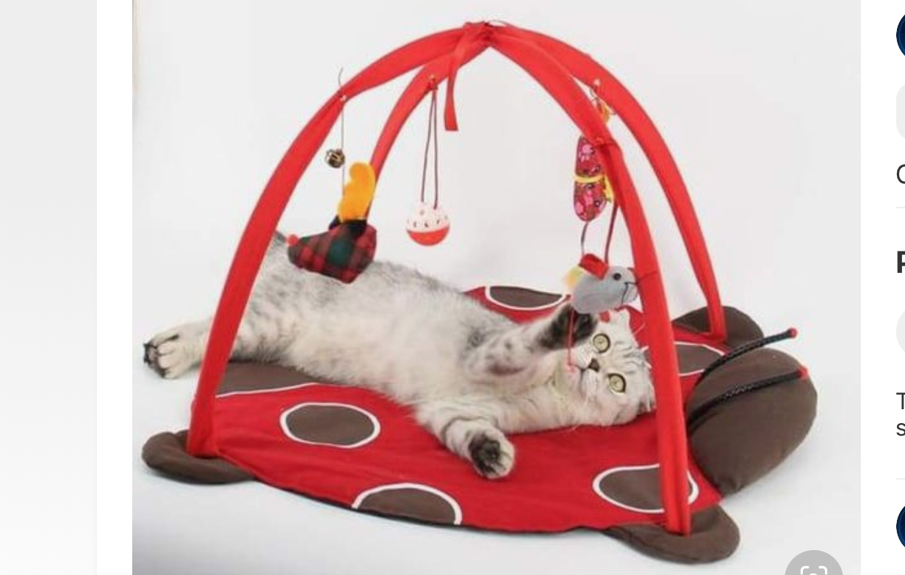
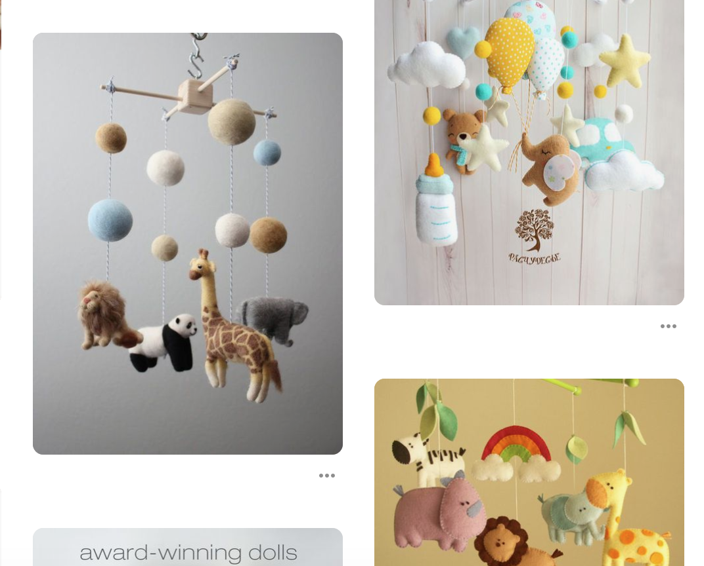
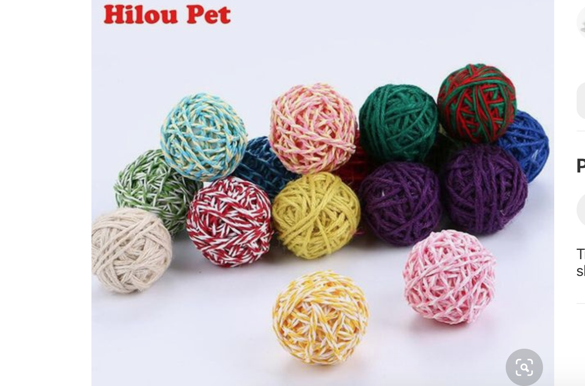
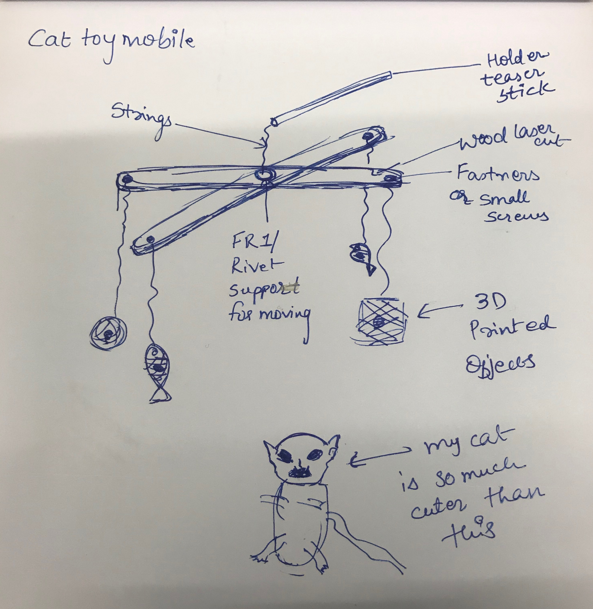

A7: Final Project Proposal!

Inspiration
Me and my roommate have a cat and I wanted to build a toy of some kind for her. She loves to play with teasers but thought it might get boring to just build one. So through some reearch I learned about the baby mobiles and thought why not something along the lines for a cat.
  
Design Concept

My final project concept is a hand held or attachable cat toy mobile made with the combination of several techniques: 2D Design, Laser Cutting, Moving Parts, and 3D CAD design and printing. The intended use case is for playing and making cats excersice. The context can be hand-held, and can also be stuck into under the table as thats our fav place of our cat.
Tasks
- CAD: Design the hanging objects of the mobile in Onshape
- 2D design and laser cut: Print the support on the top
- 3D Print: Objects attaching the string with bells in it
- Moving parts: Use a Delrin/wooden stick and the rivet/ FR1 to attach and move
Timeline
- May 29: Sketches
- May 30: Build CAD models in Onshape
- May 30: Design 2D part in Illustrator
- May 31: Laser cutting and 3D printing all the objects
- June 2/3: Assembly/Documentation
Bill of Materials
- Plywood for laser cutting: Sourced May 29th, from used packages
- 3D printing filament: will be bought from Mill Maker space
- Rivet for moving parts: Already there from class
- Strings for hanging the objects and the bells: Ordered via Amazon